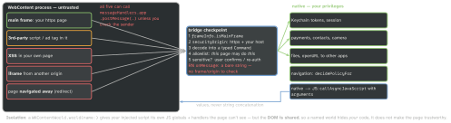

security · folio
In one line: A WebView runs someone’s JavaScript inside your app. The bridge
(WebKit message handlers, React Native postMessage, Android addJavascriptInterface)
hands that JavaScript native powers — and it is reachable by every script in every frame
of whatever page is loaded. Treat each message as untrusted input: check the origin and
frame, allowlist commands, restrict navigation, pass data to JS as values, never as code.
Download PDF Print view LaTeX source

iOS
- UIWebView (deprecated iOS 12) ran web content in your process; the App Store refused new apps using it from Apr 2020. WKWebView: separate WebContent process, Safari’s engine + JIT.
- Bridge:
userContentController.add(handler, name: "app") → JS window.webkit.messageHandlers.app.postMessage(obj) (JSON-like types). The handler gets a WKScriptMessage: body, frameInfo (isMainFrame, request, securityOrigin), world. Reply: WKScriptMessageHandlerWithReply (iOS 14) — JS gets a Promise.
- Content worlds (iOS 14):
.page, .defaultClient, .world(name:); add(_:contentWorld:name:) exposes a handler only in that world.
- Native → JS:
evaluateJavaScript("show('\(name)')") is injection (a quote in name ends the string). callAsyncJavaScript(_:arguments:in:contentWorld:) passes values.
- Navigation:
decidePolicyFor — allow https + your hosts; others → Safari; cancel javascript:, file:, data:, custom schemes. iOS 14 WKAppBoundDomains + limitsNavigationsToAppBoundDomains disable script injection / handlers elsewhere.
- Files:
loadFileURL(_:allowingReadAccessTo:) — the narrowest directory, never the whole container. Debug: isInspectable (iOS 16.4, default false) — keep it off in release.
- The controller retains its handlers → handler → VC → WebView cycle: weak proxy, or
removeScriptMessageHandler(forName:).
Android
addJavascriptInterface: every @JavascriptInterface method, to every frame and origin (before API 17: reflection → RCE). Prefer AndroidX WebViewCompat.addWebMessageListener with allowedOriginRules — the listener gets sourceOrigin + isMainFrame. setAllowFileAccess defaults false from API 30. shouldOverrideUrlLoading = decidePolicyFor.
Example — a checked bridge (Swift) and RN
final class Bridge: NSObject, WKScriptMessageHandlerWithReply {
func userContentController(_ c: WKUserContentController,
didReceive m: WKScriptMessage) async -> (Any?, String?) {
let o = m.frameInfo.securityOrigin
guard m.frameInfo.isMainFrame, o.protocol == "https",
o.host == "app.example.com",
let cmd = Command(json: m.body)
else { return (nil, "denied") }
return (await perform(cmd), nil)
}
}
cfg.userContentController.addScriptMessageHandler(Bridge(),
contentWorld: .page, name: "app")
try await web.callAsyncJavaScript("render(item)",
arguments: ["item": title], contentWorld: .page)
<WebView source={{ uri: 'https://app.example.com' }}
originWhitelist={['https://app.example.com']}
onShouldStartLoadWithRequest={r =>
new URL(r.url).origin === 'https://app.example.com'}
onMessage={e => { const m = parseCommand(e.nativeEvent.data)
if (m && allowed(m)) run(m) }}
javaScriptEnabled setSupportMultipleWindows />
React Native WebView — the traps
onMessage receives window.ReactNativeWebView.postMessage(string) — a string only, with no verified sender: any script the page runs can post.originWhitelist (default http://*, https://*) lists origins the WebView may navigate to; others are handed to the OS. It does not filter messages.onShouldStartLoadWithRequest: false blocks; not called on Android’s first load.injectedJavaScriptObject is visible to all frames; injectedJavaScriptForMainFrameOnly defaults true.- GHSA-36j3-xxf7-4pqg / CVE-2020-6506 (Sep 2020, moderate): Android WebView before 83.0.4103.106 let a cross-origin iframe run code in the top document (UXSS);
react-native-webview ≤ 10.10.2 exposed, 11.0.0 mitigates — setSupportMultipleWindows=false re-opens it.
Traps
- “It’s our own page” — until a CDN script, an ad or one XSS runs on it.
- Login / OAuth in an embedded WebView: the app can read the password; RFC 8252 says use the system browser (
ASWebAuthenticationSession).
- Injecting the refresh token into JS for the web part — any page script can read it.
Remember
“Who sent it, may they, is it well-formed?” — then values out, never code.
Related: owasp-masvs-mobile-top10 (PLATFORM-2, M4) ·
deep-link-attack-surface · oauth-oidc-jwt · rn-native-modules · mobile-data-leakage (WebView store)